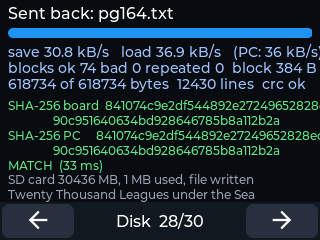
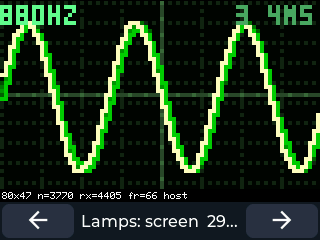
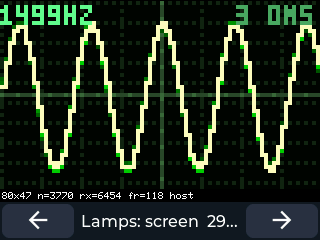
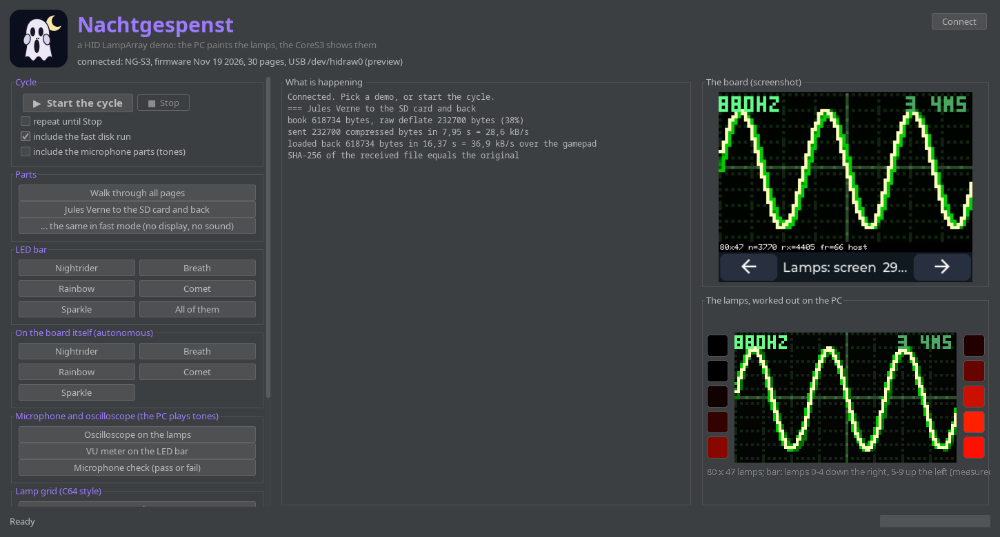
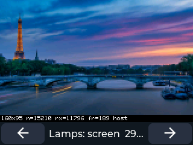
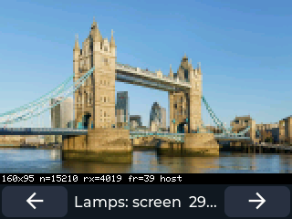
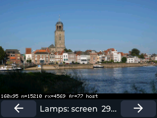

LampArray bench
LampArray benchDemos. The sources of the demos on this site are not publicly available. The macropad and the clicker themselves do not need them.
A HID LampArray is the standard way for a keyboard, a mouse or a light strip to tell a computer "these are my lamps, here is where they are, set their colours". Windows 11 uses it for Dynamic Lighting. For this project it turns the board's ten-LED bar and its screen into lamps that any computer can paint, with no driver and no serial cable. This page is the result of the test bench, run on 19 November 2026 on a Linux laptop with two Bluetooth controllers.
What was built
- One LampArray on both boards. Lamps 0 to 9 are the LED bar; lamps 10 and up are a grid of screen lamps whose size can be changed at run time, from 8 × 6 up to 320 × 190, so one lamp can be a single pixel of the 320 × 240 screen.
- The standard reports. Attributes, per-lamp position and colour depth, multi update (eight lamps in 51 bytes), range update (one colour for many lamps) and the autonomous-mode switch, in a 434-byte report descriptor that Linux accepts over USB and over Bluetooth.
- Two test pages after the Locks page: one shows the screen lamps, one the ten bar lamps with their intensity. The other pages keep their layer colours.
LampTest, a JBang tool that talks to the board through the raw HID interface and checks the result three ways: by reading the lamp back over serial, by comparing a screenshot with the lamps, and by filming the bar with a webcam.
Results
Every functional check passes on all three links: CoreS3 over USB, CoreS3 over Bluetooth and Core2 over Bluetooth. Every sampled lamp on the screen matches its colour at every grid size.
| CoreS3, USB | CoreS3, Bluetooth | Core2, Bluetooth | |
|---|---|---|---|
| Reports per second | 1,000 | 16 (multi), 30 (range) | 29 |
| Lamps per second | 8,000 | 126 to 300 | 231 to 288 |
| Enumerating a lamp | 0.4 ms | 61 ms | 63 ms |
| Draw a changed screen | about 45 ms | about 48 ms | about 80 ms |
What a frame rate of the whole screen looks like (every lamp changes in every frame):
| Grid | Lamps | USB | Bluetooth, CoreS3 | Bluetooth, Core2 |
|---|---|---|---|---|
| 8 × 6 | 48 | 166 fps | 2.7 fps | 4.7 fps |
| 16 × 12 | 192 | 42 fps | 0.7 fps | 1.2 fps |
| 32 × 24 | 768 | 10 fps | 0.2 fps | 0.3 fps |
| 64 × 48 | 3,072 | 2.6 fps | 0.04 fps | 0.1 fps |
| 128 × 96 | 12,288 | 0.7 fps | 0.01 fps | – |
| 320 × 190, one lamp per pixel | 60,800 | 0.1 fps | – | – |
What it means
- USB is the transport for lamps. 8,000 lamps per second drives the bar at hundreds of frames per second and a 32 × 24 matrix at 10 fps. One lamp per pixel works too, but at one frame every eight seconds: pictures and video belong to a separate channel.
- Bluetooth carries the bar and slow effects. About 30 range updates per second is a smooth 30 fps for the whole bar in one colour. The limit sits on the host, not in the radio: a Bluetooth 5 controller (the laptop's built-in Intel) and a Bluetooth 4.0 USB dongle both deliver about 30 reports per second, with one queued write per 33 ms. Lowering BlueZ's connection interval to 7.5 to 11 ms did not change that (still about 30 per second), so the explanation is not confirmed: the next step is to capture what interval is really negotiated. Windows is expected to behave differently and still has to be measured.
- Do not flood Bluetooth. BlueZ queues output reports without a bound and drains them slowly, so a burst of 2,000 reports arrives over more than a minute, and short range updates start to be dropped once about 50 are queued. The test tool paces its sending and waits for the queue to drain.
- Enumeration is the hidden cost. A host asks for every lamp's attributes when the device appears: 12 seconds for the 202 lamps of the default layout over Bluetooth, almost a minute for 768 lamps, minutes for more.
- USB tops out at 1,000 reports per second (full-speed USB polls once per millisecond). With range updates that is up to 810,000 lamps per second on a lamp page, where the board also draws; with nothing to draw the intake is 1.5 to 1.9 million lamps per second. One LampArray cannot hold more than 65,535 lamps anyway (the lamp ID is 16 bits).
- The LED bar does not wait for the screen. A worker task on the second core puts the bar lamps on the LED bar 1.4 to 3 ms after the last report of a frame, on both boards and both links, also while the screen is drawn; from the main loop it took 6 ms and up to 40 ms. The screen follows 40 to 60 ms later, which is the drawing time.
- The serial console and the drawing hardly disturb the measurement. On the CoreS3 the rate changes by less than half a per cent with 100 serial messages per second, on the Bluetooth link too; the Core2 loses 2 to 7 per cent. The real errors are host-side queues and other Bluetooth devices on the same controller, which the test tool paces and waits out.
- Intensity needs a curve. Each lamp has red, green, blue and an intensity of 0 to 255, but at the bar's global brightness of 40 of 255 the webcam sees no difference for the lowest 12 to 24 intensity steps. The curve from there up is smooth and rises monotonically.
A file over the lamps, and back over a game pad
The same channel carries data. The Disk demo sends a book (Twenty Thousand Leagues under the Sea, compressed to 232,700 bytes) from the PC to the CoreS3 with ordinary lamp updates: blocks of up to 1,024 lamps with a CRC and a byte offset, acknowledged by the board with the keys F13 to F24 like the status lines of a disk drive. The board unpacks the file, writes it to its SD card and shows its SHA-256 next to the one the PC sent. Then the book comes back over a game pad with 384 buttons (48 bytes per report), with the PC answering through the lamps as pushback. Over USB that is 28.6 kB/s in and 37 kB/s back, the same SHA-256 on both ends; the sender slows down and speeds up with the errors (with 1% of the lamp reports dropped on purpose it still completes, at 13 kB/s). Over Bluetooth the file arrives too, at 0.4 kB/s.
Why 384 buttons and 1,024 lamps: 48 bytes plus the report ID fit one USB packet and one Bluetooth notification, and the fixed 10 bytes of overhead leave 79% for data; 1,024 lamps are 4 kB per block, where the 12 bytes of header and CRC are 0.3% and a CRC error does not cost too much to repeat. Larger blocks would not be faster, because the limit is the number of reports.

Bar effects, a microphone and an oscilloscope
The ten LEDs of the base are one chain in the shape of a U, measured with the webcam: lamps 0 to 4 run down the right side, lamps 5 to 9 run up the left side (a third run with the board upside down confirmed the order). The board has autonomous effects (set effect nightrider, breath, rainbow, comet, sparkle) in the colour of the layer, and a VU meter that follows its microphone. The microphone is tested with tones from the speaker of the PC: it hears 442, 1000 and 2000 Hz for tones of 440, 1000 and 2000 Hz.
What the board shows or hears reaches the demo window over the game pad (the bar colours and the microphone waveform as reports of the HID node), not over the serial port. The PC turns the waveform into an oscilloscope on the lamps: a graticule, a trigger so that the trace stands still, an automatic time base and amplitude, a glowing phosphor trace and the frequency, painted with lamp updates on an 80 × 47 grid. It shows on the screen of the board and in the window at the same time.


The shell
The serial port is a small shell with lower-case commands, help and help <command>, and the long help texts on the SD card. The manual lists every command.
The demo window
A window on the PC (jbang tools/DemoApp.java) runs the whole cycle or any part: all pages, the file transfer, LED bar effects (Nightrider, breath, rainbow, comet, sparkle), C64-style raster bars and a sine scroller on a 40 × 25 grid, and a photo slideshow where each photo dissolves into the next with a prime modulus: lamp i switches when (i · p) mod m falls below a rising threshold, which visits all lamps in a scattered but regular order without a table. On 160 × 95 lamps in full colour a dissolve takes 1.9 s. Nothing is uploaded: the board only receives lamp updates.




Five European places, from Wikimedia Commons: the Eiffel Tower and the Pont des Invalides (CC0), Tower Bridge by Colin (CC BY-SA 4.0), the Brandenburg Gate by Thomas Wolf (CC BY-SA 3.0), the Colosseum by FeaturedPics (CC BY-SA 4.0) and Deventer seen from across the IJssel by Smiley.toerist (CC BY-SA 4.0). Licences: CC BY-SA 4.0, 3.0.


Try it
jbang tools/LampTest.java enum --board S3 --via usb jbang tools/LampTest.java bar --board S3 --via ble --crop x0,y0,x1,y1 # webcam intensity ramp jbang tools/LampTest.java screen --board C2 --via ble --tiers 8x6,16x12,32x24 jbang tools/LampTest.java rate --board S3 --via ble --pace-us 1 # how fast does the link deliver?
Also on the board now: a System Control report (only Wake Up is ever pressed in tests; Power Down and Sleep are refused over serial), and persistent settings for the LED bar and the backlight. Not tested yet: Windows Dynamic Lighting, which would show whether Windows accepts the device over Bluetooth and how fast it is there.